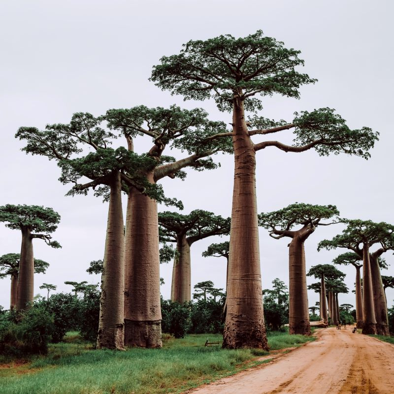
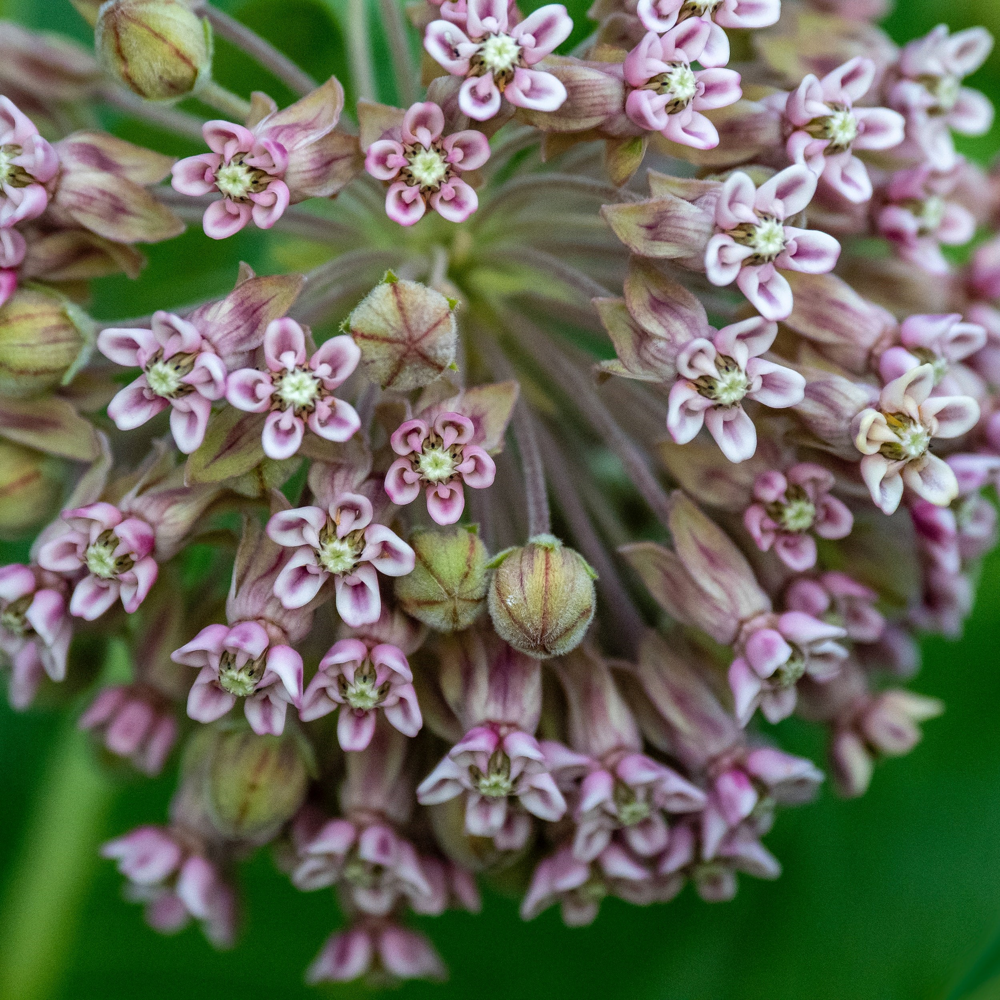
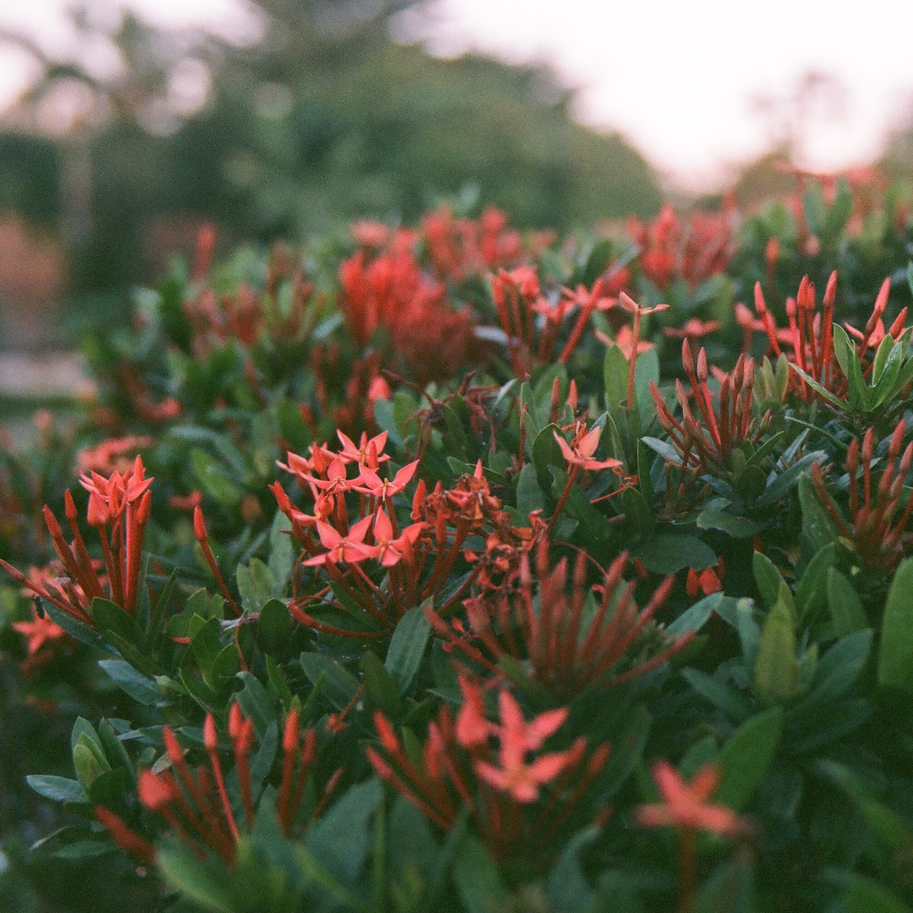
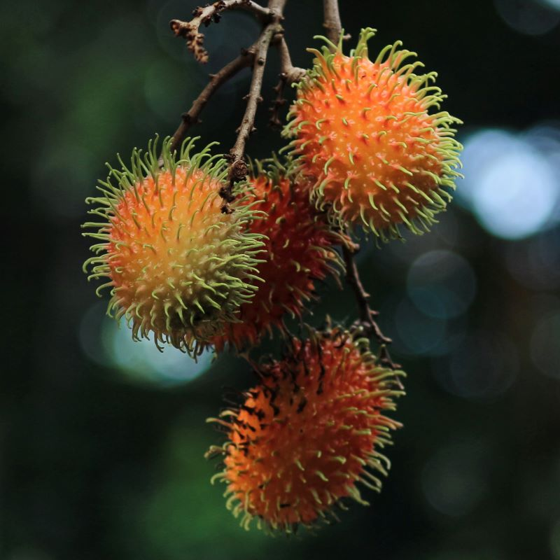
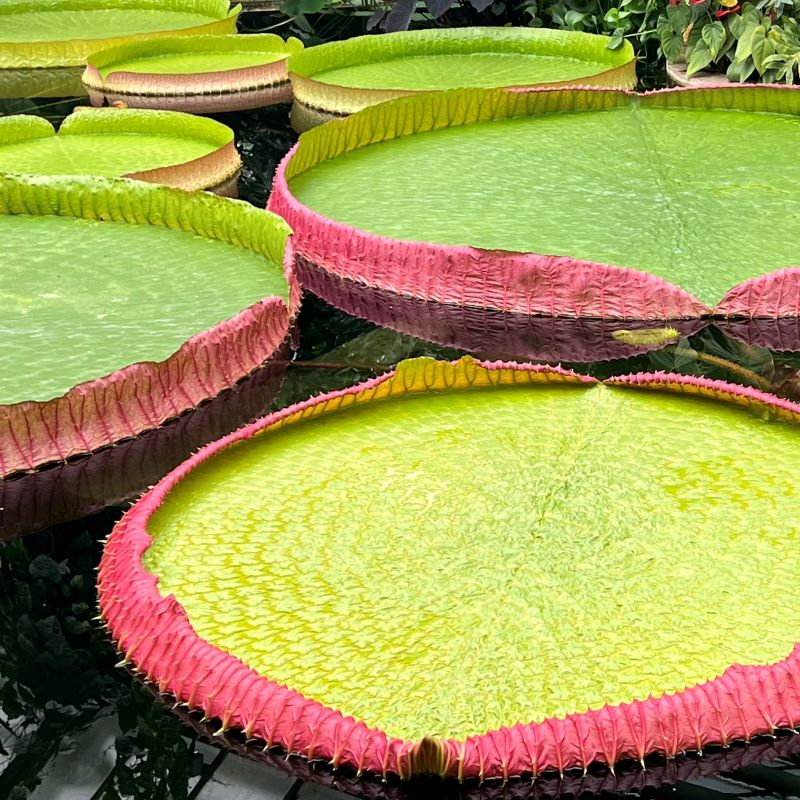

Baobab trees are Madagascar trees that produce nutrient-rich fruit. They are adapted to store water in their trunks during the dry season, and humans have cut hollows in them that can be used as wells for rainwater collection.

Aspen trees' trunks are capable of photosynthesis, allowing some growth during the winter. They reproduce through "sprouting," where clones of themselves emerge from their roots.

Milkweeds have a milky sap in their stems that is bitter and toxic. However, the milky sap, as well as other parts of the plant, have been traditionally used as various medicines and food. Monarch caterpillars rely on the plant.

Ixora have a sweet nectar on their stems that you can suck on. Gently pull the stem from the flower's base.

Rambutan is a tropical Asian fruit that is noted for its harmless, hair-like spines called spinterns. The inside resembles lychee with a seed at the center, but it tastes more like a grape.

Giant lily pads are capable of carrying a person over water. This is due to their vein structure, which froms "ribs" that trap air underneath it.